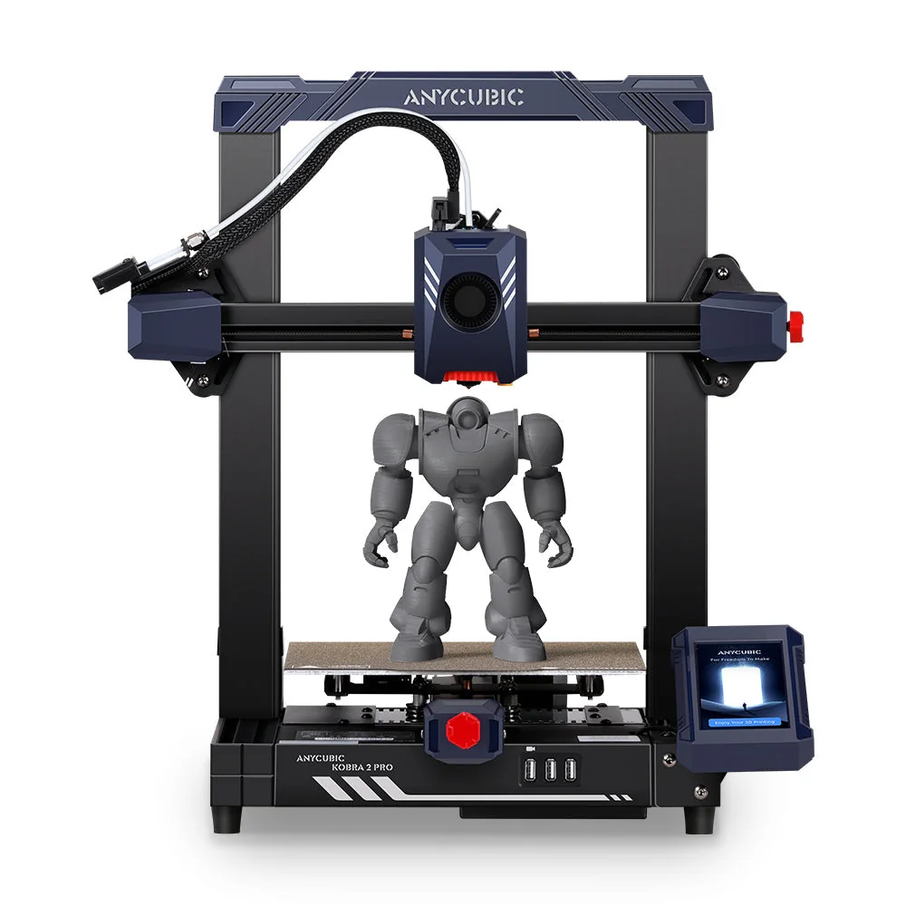

Build volume
250 x 220 x 220 mm stated HWD, i.e. 220 x 220 x 250 mm; 12.1 L
Advertised dimensions; check usable space and variants.
Fastest of the small Kobra 2 machines at a claimed 500 mm/s, with a Cortex-A7 processor and vibration compensation.

250 x 220 x 220 mm stated HWD, i.e. 220 x 220 x 250 mm; 12.1 L
Advertised dimensions; check usable space and variants.
260 C nozzle temperature ceiling; 0.4 mm replaceable nozzle
Published limits; hardware and firmware limits may differ.
$309.00 on store.anycubic.com, Aug 2026, with the compare-at price also $309.00
Dated listing, not a live offer. Read the configuration and region.
Understand the hardware, explore compatible changes and find a diagnostic starting point when something goes wrong. Expand the specification sections for every recorded value, condition and original reference.
Dimensions, construction and the hardware that moves the print.
| Property and unit | Published value and conditions | Sources and dates |
|---|---|---|
| Manufacturer & exact marketed model name (verify the exact product identity first) | Anycubic Kobra 2 Pro | 1 source |
| Release date (announcement and actual shipping) | Listed on the Anycubic store from 2 February 2026 (Shopify publish date for this listing; the model itself is older) | 1 source |
| Street price (USD; dated snapshot per entry) | $309.00 on store.anycubic.com, Aug 2026, with the compare-at price also $309.00 | 1 source |
| Variants & sibling models — and how to tell them apart (spec-contamination risk) | Same 220 x 220 x 250 mm build volume as the Kobra 2 and Kobra 2 Neo, but Anycubic's own comparison table puts it at 500 mm/s max and 300 mm/s typical against the Kobra 2's 300/200 - the build volume alone will not tell these three apart. It also adds Anycubic APP support, which the base Kobra 2 lacks | 3 sources
|
| Property and unit | Published value and conditions | Sources and dates |
|---|---|---|
| Build volume X×Y×Z (mm) — advertised vs actually usable | 250 x 220 x 220 mm stated HWD, i.e. 220 x 220 x 250 mm; 12.1 L | 1 source |
| Machine footprint (mm) & clearance needed (cable/spool overhang) | 486 x 435 x 463 mm stated HWD - footprint about 435 x 463 mm | 1 source |
| Net weight (kg) | 8.4 kg | 1 source |
| Enclosure: open / enclosed; panel material; door/lid | Open frame, no enclosure | 1 source |
| Property and unit | Published value and conditions | Sources and dates |
|---|---|---|
| Kinematics (bedslinger i3 / CoreXY / other) | Cartesian bed-slinger | 1 source |
| Property and unit | Published value and conditions | Sources and dates |
|---|---|---|
| Max print speed (claimed, mm/s) | 500 mm/s maximum print speed (Anycubic Lab figure) | 1 source |
| Recommended/typical print speed | 300 mm/s typical print speed (manufacturer figure) | 1 source |
Extrusion, heating, leveling and material handling.
| Property and unit | Published value and conditions | Sources and dates |
|---|---|---|
| Input shaping supported? Implementation (Klipper IS / Marlin ZV / proprietary) | One-click vibration compensation that detects X/Y resonance frequencies, plus flow control with retraction and refill compensation | 1 source |
| Property and unit | Published value and conditions | Sources and dates |
|---|---|---|
| Type (direct drive / bowden) & design name | Optimised direct extruder | 1 source |
The creator’s replacement cover makes hotend and fan access easier while retaining the stock fan/duct option. It uses the case hardware plus three M3×10 screws; the listing also links a separate custom duct.
Applies to: Creator explicitly lists the Kobra 2 series. Check cover and duct versions together; Neo users additionally need the separate endstop adapter.
| Property and unit | Published value and conditions | Sources and dates |
|---|---|---|
| Max nozzle temp claimed AND firmware max temp limit (both values) | 260 C nozzle temperature ceiling; 0.4 mm replaceable nozzle | 1 source |
The Kobra2Pro Insights guide checks Z offset, plate cleanliness and gantry alignment for an inconsistent first layer. It also directs owners to check vertical bed play and SG15 bearing contact, avoiding excessive bearing preload.
Applies to: Kobra 2 Pro stock SG15 bed-bearing arrangement; community maintainer guidance, not an Anycubic failure-rate statement.
| Property and unit | Published value and conditions | Sources and dates |
|---|---|---|
| Auto bed leveling: probe technology (inductive / strain gauge / load cell / touch probe) | Anycubic LeviQ 2.0 automatic levelling with smart Z-offset | 1 source |
| Property and unit | Published value and conditions | Sources and dates |
|---|---|---|
| Officially supported filament list | PLA, ABS, PETG, TPU (Kobra 2 family list) | 1 source |
Firmware, controls, connections and calibration.
| Property and unit | Published value and conditions | Sources and dates |
|---|---|---|
| Host computer (SoC, RAM, storage) if firmware runs on embedded Linux | Cortex-A7 1.2 GHz application processor | 1 source |
For owners who need configuration access and local frontends, Rinkhals adds SSH, Moonraker and Mainsail/Fluidd while retaining the Kobra 2 Pro stock interface and calibration workflow. Follow the model-specific package and recovery instructions.
Applies to: Only Kobra 2 Pro with Trigorilla Spe B v1.0.x mainboard; the tested matrix lists stock 3.1.2.3 and 3.1.4.
| Property and unit | Published value and conditions | Sources and dates |
|---|---|---|
| On-device UI capabilities (model preview, per-object controls, etc.) | Supports the Anycubic app (firmware 3.0.5 or later) for online model search, real-time video supervision, online slicing and remote control | 1 source |
Published safeguards, support terms and independent evidence.
| Property and unit | Published value and conditions | Sources and dates |
|---|---|---|
| Warranty length & support reputation (evidence, not vibes) | One year on the complete machine (excluding gifted and second-hand machines), with component warranty periods that vary by part; the period starts on the delivery date and is suspended while a replacement is in transit. Anycubic states it will follow longer local statutory periods where they apply | 1 source
|
This guide presents the catalog’s sourced record for this exact model. Source dates belong to each reference; a page update does not mean every specification has been rechecked.
Prices are dated listing snapshots, with configuration, regional and sale conditions. They are not current offers. Unknown values remain unfilled.
Firmware, variants and available accessories can change. Read the original reference before making a purchase or planning a process.
Firmware, modifications and troubleshooting links are checked against the model and stated hardware or firmware revision. A creator’s compatibility claim is not a fit test by this site. Official troubleshooting describes a diagnostic route; individual reports do not establish a failure rate.
This review did not verify hardware upgrades for this exact model. That is a research gap, not a claim that none exist.